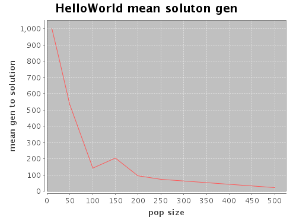

Clojure support in GEVA
Clojure is a lisp dialect that runs on the JVM, it has good performance, is well suited to paralell programming and has excellent JAVA interoperability, for more details see http://clojure.org The clojure support that's been added to GEVA falls into 3 categories:
- Call GEVA directly from Clojure
You can call GEVA directly from your clojure source, the API allows you to load and modify properties files, programatically create grammars and access the results of your evolutionary runs.
- Script evolutionary runs written in Java
Since the Clojure support allows you to load property and grammar files and access the results of a run you can use it to easily script normal GEVA runs and collect and plot higher level statistics. This allows you to answer questions like "What is the average number of generations to solve the Simple Regression problem with varying population sizes?"
- Writing fitness functions in Clojure
You can write fitness functions in a separate clojure source file and reference them in your properties files. The API provides access to the GEVA properties and random number generators in a thread safe manner. Programs written in this manner are run with the standard GEVA GUI or command line and configured via the properties files.
Getting started
The easiest way is to use leinegen, add the following to your project.clj.
"[org.clojars.cdorrat/geva-core "1.2-SNAPSHOT"]"
Calling GEVA from Clojure
This approach allows you to easily embed GEVA in idiomatic clojure programs by including geva-clj-x.x.x.jar on the classpath. and using the geva library.
The follow sample is equivalent to the symbolic regression included with the GEVA distribution.
(ns example1
(:use [geva]))
(defn target-fn [x]
(+ x (Math/pow x 2) (Math/pow x 3) (Math/pow x 4) (Math/pow x 5)))
(defn fitness-fn [ind-fn]
(reduce + (map #(Math/abs (- (ind-fn %) (target-fn %))) (range -1 1 0.1))))
(def props (default-properties "population_size" 200))
(def grammar (create-grammar
:code "(fn [x] <expr>)"
:expr "(<op> <expr> <expr>) | <var>"
:op "+|-|*"
:var "x|1.0"))
(def result (geva-run grammar props fitness-fn))
(println "GEVA evaluation completed in " (:elapsed-ms result) "ms")
(println "The best fitness was " (apply min (-> result :stats :best-fitness)))
Clojure Grammars
Specifying grammars in clojure provides some conveniences that aren't available in the standard geva package.
- Lists can be used for the right hand side of expressions,
eg. :aname (range 1 6) is equivalent to :aname "1|2|3|4|5"
- There's basic support for numeric constants,
eg. :anum (constant-int 10 100) produce a grammar that provides constants in the range 10 - 100 in place if <anum>
- Support for repeating groups with option prefix and suffixes
eg. :aname (repeats "<foo>" 1 3) is equivalent to :aname "<foo>|<foo><foo>|<foo><foo><foo>"
See src/main/clojure/geva.clj in geva-core for details.
Scripting GEVA runs with Clojure
The clojure support can be used to run GEVA with standard (Java) fitness functions specified in a properties files and operate on the statistics collected.
The following example runs the HelloWorld example 50 times for a number of population sizes and plots the mean number of generations requred to find a solution with Incanter. The resulting output looks like:

(ns example2
(:use [geva]
[incanter core stats charts]))
(defn mean-gen-for-pop-size [props pop-size]
(let [new-props (set-properties props "population_size" pop-size)
result-seq (map #(count (-> % :stats :best-fitness))
(take 50 (repeatedly #(geva-run new-props))))]
(assoc {} :pop-size pop-size :mean-gen (mean result-seq))))
(defn plot-gen-sizes [props]
(let [pop-sizes [10 25 50 100 150 200 250 500]
data (map #(mean-gen-for-pop-size props %) pop-sizes)]
(view (xy-plot (map :pop-size data) (map :mean-gen data)
:title "HelloWorld mean soluton gen"
:x-label "pop size" :y-label "mean gen to solution"))))
(plot-gen-sizes (load-properties "../../param/Parameters/HelloWorld.properties"
"grammar_file" "../../param/Grammar/letter_grammar.bnf"))
Writing fitness functions in clojure
This approach allows you to model the problem in Clojure and use the GEVA GUI to run evolutionary scenarios.
Follow these steps:
- Create a grammar file for your problem, by default it's assumed that the grammar productions are valid clojure code.
- Create a clojure source file that contains your fitness function, the function should accept 1 parameter which is the mapped phenotype to be evaluated.
- Create a properties file and set the following additional properties:
- clojure.fitness.file - the path to your clojure fitness source file
- clojure.fitness.function - the name of your fitness function
- Optional - clojure.expression.function - the function used to convert Phenotypes before calling the fitness function. The default (geva/default-create-ind) assumes that individuals are valid clojure source and calls (eval(read-string phenotype))
- Optional - clojure.group.fitness.function - the function used to evaluate a population once per generation. By default we use pmap called from geva/set-group-fitness!, see the source for the required method signature.
Start the GEVA properties GUI and go to [Configure]->[Advanced]-> and change Main.Run to Main.ClojureRun
On the main screen, select your properties & grammars files and click on [Run]